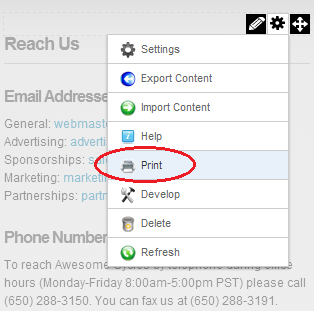
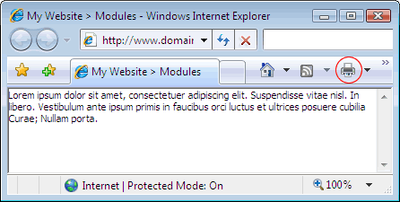

Printing Content
How to print module content. This option may not be available for all content.
- Select
 Print from the module actions menu. This opens a new Web browser with the content displayed in a print friendly format.
Print from the module actions menu. This opens a new Web browser with the content displayed in a print friendly format.

- Use the Print option on your new Web browser to print this content.

Content displayed in a Web browser ready to print